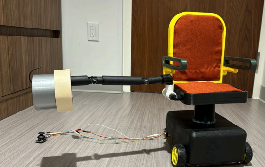
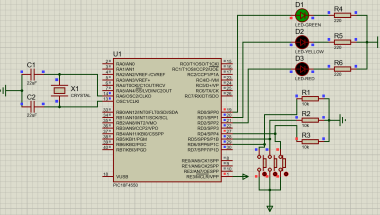
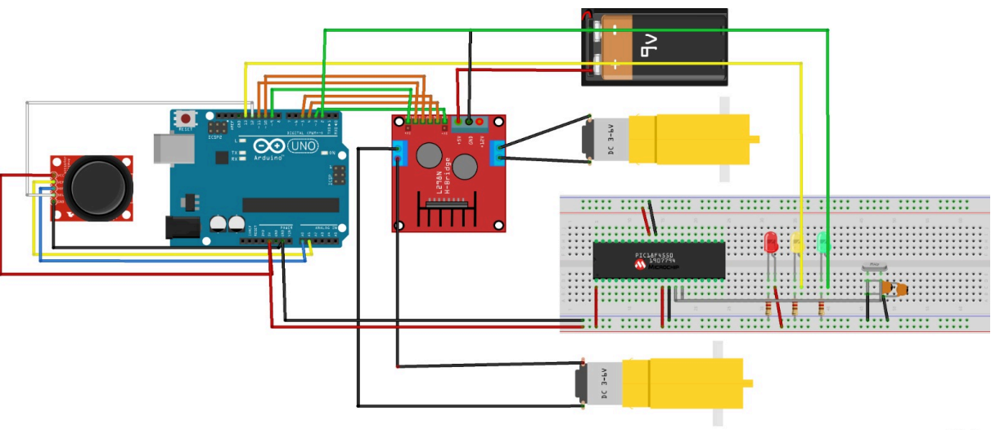

Electric Wheelchair Project
Skills gained: 3D modelling (SolidWorks), Manufacturing (Fusion360), Programming (C++), Electronics (Drivers, microcontrollers, actuators, and sensors)

The Electric Assistance Wheelchair project focused on the design and development of a functional mobility prototype that integrates mechanical, electronic, and control systems to improve motion stability and comfort for users with reduced mobility. The mechanical structure was modeled and optimized in SolidWorks to reduce the total weight of the frame by approximately fifteen percent without compromising its structural integrity. This optimization was achieved by adjusting the geometry of the chassis and reinforcing high-stress areas while maintaining manufacturability.

The electronic system was designed around a dual-motor configuration powered by H-bridge drivers and controlled through an Arduino-based platform. Several sensors were integrated into the system to provide feedback on speed, direction, and obstacle detection. The control logic was implemented in Arduino C++, using a proportional speed control algorithm that ensured smooth acceleration, deceleration, and bidirectional motion. This allowed the wheelchair to maintain stability and consistent response even under uneven loads or variable terrain.


In its current stage, the wheelchair achieves stable motion control and reliable structural performance. Future iterations aim to enhance usability and efficiency through the integration of wireless control, improved power management, and lightweight protective enclosures for the electronic components. Overall, the project represents a complete mechatronic solution that combines design optimization, embedded control, and functional prototyping to address a real engineering challenge.